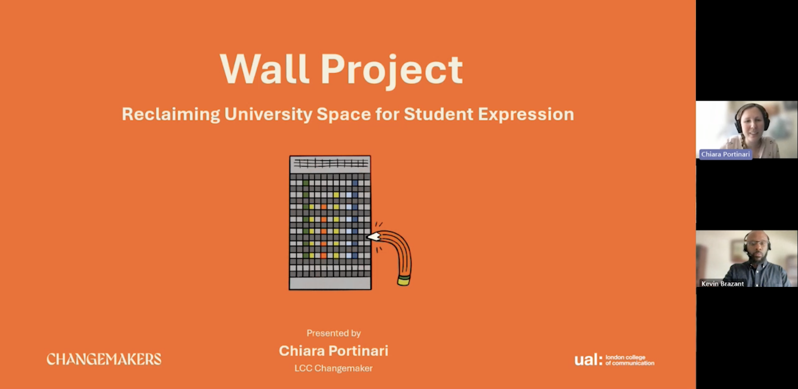

Chiara co-presented The Wall Project with Kevin J. Brazant, Progression Attainment and Support Manager at London College of Communication (LCC) - UAL, at the University of Bedfordshire’s Compassionate Assessment Network — a monthly online gathering that brings educators together to explore inclusive and student-centred assessment practices.
“We had such good feedback from colleagues and it was great to finish the series with a creative example of embedding compassionate assessment in practice.”
For Chiara, sharing practice is a vital part of their work as an educator. The Wall Project exemplifies how assessment can move beyond traditional formats: it invites second-year Communications and Media students at LCC to present self-directed research publicly, using the university’s physical walls as a space for dialogue, experimentation, and expression.
Presenting to an audience of university staff and academics, Chiara articulated both the pedagogical thinking behind the project and its impact on students — contributing to a wider professional conversation around compassionate, creative approaches to assessment.